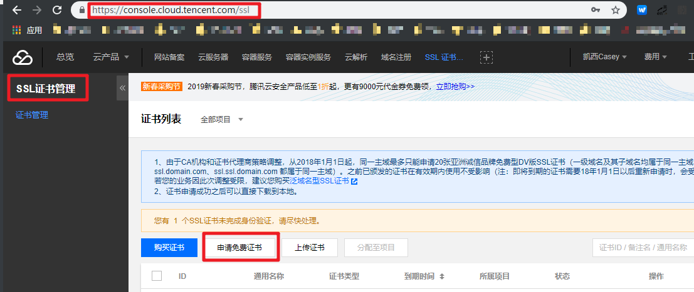
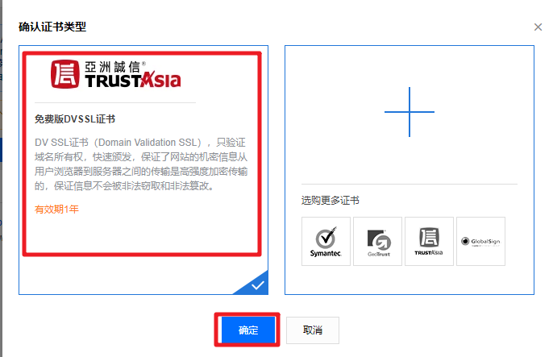
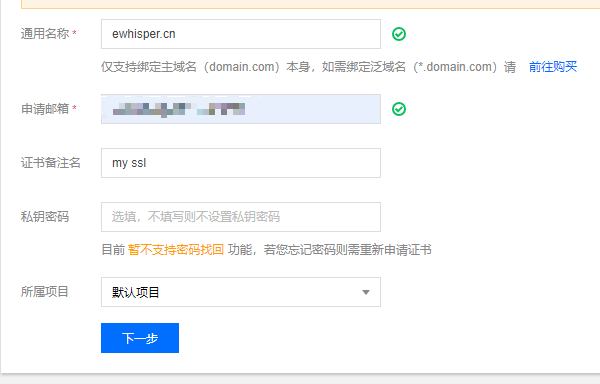
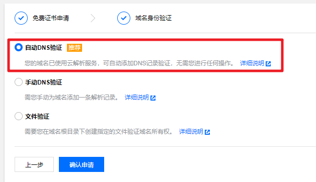
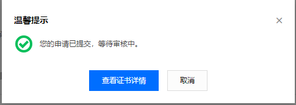
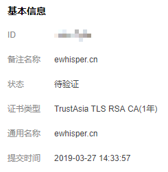
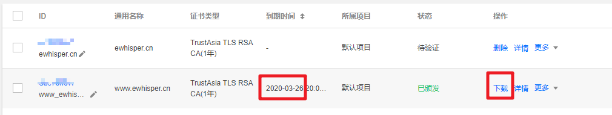

腾讯云申请免费SSL证书
在 2019-03-29 Friday 发布于 DevOps 分类 • 1 min read
前言¶
现在申请SSL证书的门槛和费用都大大降低了. 出现了很多免费提供加密证书的机构, 比较知名的是国外的Let’s Encrypt, 免费, 自动化, 开放. 国内的云服务商也会提供免费的SSL证书. 下面是我在腾讯云上申请SSL证书的步骤.

步骤¶
-
进入腾讯云SSL证书管理页面, 点击 申请免费证书, 如下图:

-
目前腾讯云上提供的免费证书是 TRUSTAsia家的, 选择并确定. 如下图:

-
接下来就填写证书需要的相关信息, 很简单, 只有2项必填项:
- 通用名称, 具体的单域名. (
 如: www.ewhisper.cn, blog.ewhisper.cn. 不能是*.ewhisper.cn 这种通用域名.)
如: www.ewhisper.cn, blog.ewhisper.cn. 不能是*.ewhisper.cn 这种通用域名.) - 申请邮箱

- 通用名称, 具体的单域名. (
-
接下来是域名身份验证. 腾讯云一套的话, 直接选择 自动DNS验证.

-
这样就完成申请了, 接下来就是等待审核了. 我的ssl审核的非常快, 也就十几分钟就下来了. 如下图:

-
证书详情如下:

-
证书信息列表如下, 证书有效期一年. 可以选择部署到CDN和负载均衡上. (如果有的话) 也可以下载部署到nginx上.

-
下载的是个证书压缩包. 包括各类web server的证书类型:
- Apache: key, crt, 和bundle.crt
- IIS: pfx
- Nginx: crt, key
- Tomcat: jks
-
接下来就是NGINX配置的事情了. 戳这儿查看